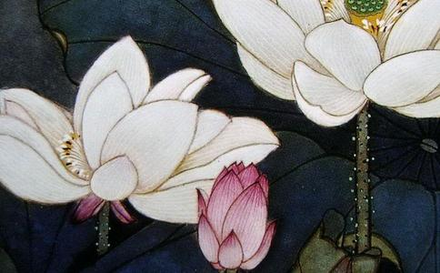

像往常一样，每星期天
笑颜慈譪的黄老菩萨， 每天11时半， 风雨不改的来到绿野湖畔放生， 一年365天从不间断， 话匣子一打开他就谈得不亦乐乎， 故事一箩筐， 像一部警世录、一首劝世歌， 发人深思， 我们像是寻宝人员， 入宝山岂能不挖宝? 但见眼前的长者， 像个隐退江湖的
现年74岁的黄老菩萨生于中国潮州， 年轻时因为家贫没有机会求学， 南来后在一家树胶厂当苦力， 结婚后在妻子资助下创业， 成了头家， 并把一番事业传给孩子， 谈起老伴的贤慧， 他就赞不绝口， 如今天天一起来放生，
老菩萨追溯自己的
黄老菩萨说得兴起， 比手划脚， 七情都爬上红润的脸上， 我蓦然瞥见他左袖口露出断了掌的手，，，，，而他口口声声忏悔， 好像意外断手， 是过去的杀生业重造成，
「唉」一声， 他坦言道: 「过去人人叫我酒鬼、杀生鬼、赌鬼、矮仔鬼， 从猫狗、田鸡、到蟒蛇， 我吃尽天下野味，」 然后摇摇头: 「现在回想起来， 才发现， 人啊! 怎么那么残忍? 竟然将自己的五脏六腑当作动物的葬身之地， 所以后来回头啰! 与老伴到处买生、每天放生，」 从那时候起， 老菩萨开始茹素， 放生茹素一晃近二十年，
「
那么， 提倡
黄老菩萨说， 放生得智慧， 「你从刀口下救出一条生命， 那放生才是有意义的。站在小动物的立场， 想一想如果你落得被人杀害， 自己感受如何? 要感同身受嘛! 猫狗尚且知道你来抓牠、杀牠， 也会恐慌害怕躲起来， 一些小动物甚至装死， 可见牠们都不愿意死啊! 凭什么你要长寿， 牠就得短命? 而你为什么偏偏要杀牠， 只为了满足一己私欲， 大快朵颐呢?」
说着说着， 老菩萨流露了一脸的悲悯: 「众生有灵性啊， 会让你深受感动，」 老菩萨印象最深刻的是， 有一次在吉隆坡中华港， 看到一个小伙子拿着铁锤猛锤一只60公斤的巨鳖， 他见状， 情急下大喝: 刀下留情啊! 然后花了千多元买下巨鳖， 把牠载到蒂蒂旺莎湖放了， 岂知， 那鳖似有灵性， 浮出湖面向黄老菩萨点了三次头， 才潜走，
另一次老菩萨到宝敦花园的巴剎， 在摊口正要买下整笼田鸡， 然而却来了两个妇女， 也坚持要买田鸡， 并声言你有钱我也有钱， 为何你能买我不能买? 三人闹起来， 老菩萨急得当场哭了， 一边哭一边说: 「田鸡啊田鸡， 你的命好苦啊， 不是我不救你， 是她们不让我救， 你若算帐， 就算到她们头上吧!」 说罢， 双手合十给田鸡回向， 老菩萨的慈悲， 感染了身边的路人也都流下泪来了， 那两位妇女吓得退出， 成全老菩萨的心愿，
后来老菩萨再回到巴剎时， 发现那卖田鸡的老伯也改行了， 转卖鸡蛋， 咸蛋，
老菩萨试过有好几次这里放生， 那里就有人钓鱼， 护生心切的他逼不得已， 撒了个善意的谎言， 带了香烛对垂钓者说: 「你们还敢来这儿钓鱼啊? 听闻前几天这儿淹死人呢!」 唬得人掉头跑得无影无踪，
净空法师听闻黄老菩萨的放生事迹， 1999年弘法会的欢送宴上， 接受信众的供养后， 把红包全部一推: 「你拿去放生!」
老菩萨放生没有规定数量的多寡， 一切
摊摊手， 老菩萨一幅不置可否的神情， 瞪圆了眼说: 「《佛说因果偈》云: 今生短命为何因， 前世宰杀众生身; 今生长命为何因， 前世买物多放生， 因果这回事你不可不信哦! 我两次要开刀都没开刀， 病奇迹地好了，」
那是3， 4年前的事， 老菩萨因为便血被诊断出患了肠癌， 等待动手术期间， 遇到贵人介绍他吃
「我吃的是 『 阿弥陀佛药 』!」 黄老菩萨笑笑说， 并出示口袋的阿弥陀佛圣像， 那主治医生当场向他讨三张， 他直率的要医生接领时念三声佛号， 而对方也照做不误!
去年年底， 老菩萨不小心闪了腰， 腰椎间滑出引起左脚麻痹， 疼痛难当， 随时有跌倒半身不遂之虞，
「这个世界为什么会那么多灾多难， 战争， 动荡不安? 因为人类的杀业太重了啊! 我们都是从三恶道来的， 习气这么重， 怎么改? 放生可以改啊! 忏悔偈中云: 『往昔所造诸恶业， 皆由无始贪瞋痴， 从身语意之所生，一切我今皆忏悔』 藉由放生， 护生培养慈悲心， 人人能有慈悲心， 则一切仇恨得以化解， 无有战争， 世界和平国泰民安，
老菩萨每天念9篇
诚然， 让动物受苦是完全缺乏慈悲的表现， 对动物慈悲并不是因为人是万物之灵， 而是人必须跟所有的生物共存，
一切以利他功德为前提， 一切以脱众生苦厄为怀， 则自身无事， 心胸渐宽， 老菩萨说罢， 哈哈两声， 双手合十， 一声阿弥陀佛， 两袖清风绝尘而去， 那背影， 真有点像与世无争的侠客的豪迈自在的风范。